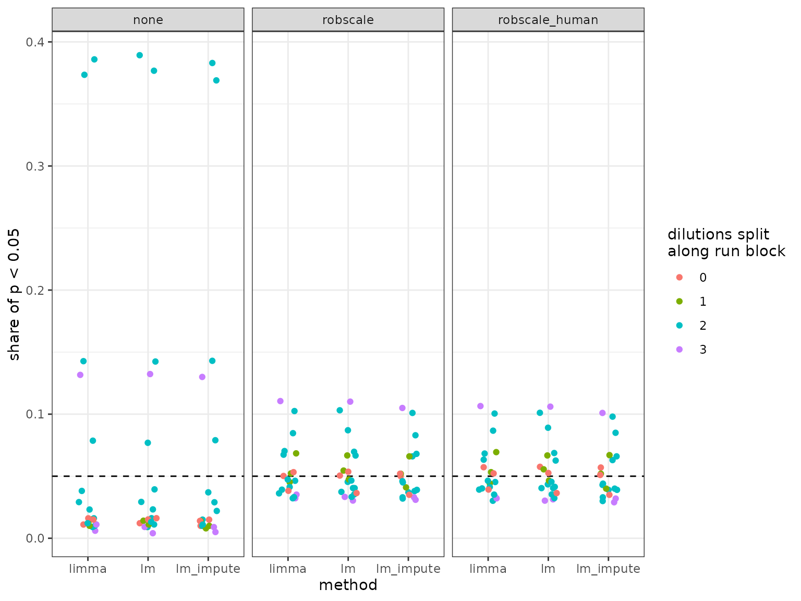
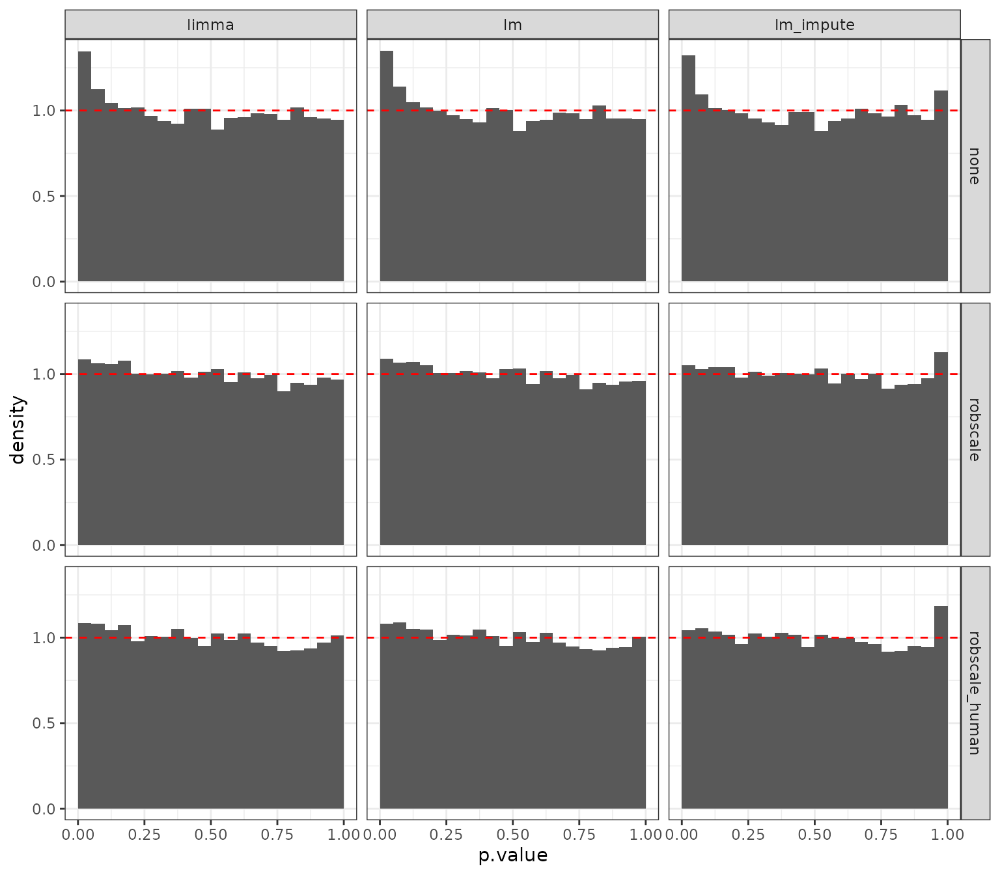

vignettes/Benchmark_null_split.Rmd
Benchmark_null_split.RmdThe samples of each IonStar dilution are split at random into two pseudo-groups, A and B, and the full pipeline (normalization, median polish, model) tests B against A. No protein differs between A and B, so:
The check uses no labels beyond the dilution, so it compares normalizations without rewarding any of them by construction.
IonStar has 4 runs per dilution, too few to split one dilution (2 vs
2, 3 distinct splits). Each of the 5 dilutions is therefore split 2 vs
2, giving 10 vs 10, and the model is ~ dilution. + pseudo.
with the contrast pseudo.B - pseudo.A. There are 6^5 / 2 =
3888 distinct splits.
robscale() on all proteins, robscale_subset()
on the human proteinslm,
limma, lm_impute
The runs were acquired in two blocks (run IDs 02–11 and 12–21), with
two runs of each dilution in each block. A split of a dilution along the
run blocks puts a possible technical effect into the pseudo-group
contrast, so each split records how many dilutions it splits along the
blocks. One extra split, run_block, does this for all five
dilutions.
Decoys and contaminants removed, proteins with at least two peptides, small intensities removed.
datadir <- file.path(find.package("prolfquadata"), "quantdata")
mq <- prolfquapp::tidyMQ_Peptides(file.path(datadir, "MAXQuant_IonStar2018_PXD003881.zip"))
annotation <- readxl::read_xlsx(file.path(datadir, "annotation_Ionstar2018_PXD003881.xlsx"))
res <- dplyr::inner_join(mq, annotation, by = "raw.file")
res$pseudo <- "A"
config <- create_mq_peptide_config()
config$factors[["dilution."]] <- "sample"
config$factors[["pseudo."]] <- "pseudo"
config$factor_depth <- 1
lfqdata <- prolfqua::LFQData$new(prolfqua::setup_analysis(res, config), config)
lfqdata$set_data(lfqdata$data_long() |> dplyr::filter(!grepl("^REV__|^CON__", protein_Id)))
lfqdata$filter_proteins_by_peptide_count()
lfqdata$remove_small_intensities()
log2_peptides <- lfqdata$get_Transformer()$log2()$lfq
human_peptides <- log2_peptides$get_copy()
human_peptides$set_data(human_peptides$data_long() |> dplyr::filter(grepl("HUMAN", protein_Id)))
normalized <- list(
none = log2_peptides,
robscale = log2_peptides$get_copy()$get_Transformer()$robscale()$lfq,
robscale_human = log2_peptides$get_copy()$get_Transformer()$robscale_subset(
lfqsubset = human_peptides, preserve_mean = FALSE)$lfq
)
aggregate_proteins <- function(lfq) {
agg <- lfq$get_Aggregator()
agg$aggregate()
agg$lfq_agg
}
proteins <- lapply(normalized, aggregate_proteins)
set.seed(42)
protein_subset <- sample(unique(proteins$none$data_long()$protein_Id), n_proteins)
proteins <- lapply(proteins, function(lfq) {
lfq$set_data(lfq$data_long() |> dplyr::filter(protein_Id %in% protein_subset))
lfq
})
samples <- dplyr::distinct(proteins$none$data_long(), sampleName, dilution.) |>
dplyr::inner_join(dplyr::distinct(res, raw.file, run_ID), by = c(sampleName = "raw.file")) |>
dplyr::mutate(run_block = ifelse(as.integer(run_ID) <= 11, "first", "second")) |>
dplyr::arrange(dilution., run_ID)
draw_split <- function(samples) {
samples |>
dplyr::group_by(dilution.) |>
dplyr::mutate(pseudo. = sample(rep(c("A", "B"), dplyr::n() / 2))) |>
dplyr::ungroup()
}
set.seed(1)
splits <- c(
stats::setNames(lapply(seq_len(n_splits), function(i) draw_split(samples)), sprintf("split_%02d", seq_len(n_splits))),
list(run_block = dplyr::mutate(samples, pseudo. = ifelse(run_block == "first", "A", "B")))
)
along_block <- vapply(splits, function(s) {
s |>
dplyr::group_by(dilution.) |>
dplyr::summarise(along = dplyr::n_distinct(paste(pseudo., run_block)) == 2) |>
dplyr::pull(along) |>
sum()
}, integer(1))
table(dilutions_along_run_block = along_block[names(along_block) != "run_block"])## dilutions_along_run_block
## 0 1 2 3
## 3 3 11 3
fit_split <- function(lfq, split, method) {
lfq <- lfq$get_copy()
data <- lfq$data_long()
data$pseudo. <- split$pseudo.[match(data$sampleName, split$sampleName)]
lfq$set_data(data)
fa <- prolfqua::build_contrast_analysis(lfq, "~ dilution. + pseudo.", pseudo_contrast, method = method)
dplyr::ungroup(fa$get_contrasts()) |>
dplyr::select(protein_Id, diff, p.value, FDR)
}
grid <- expand.grid(
normalization = names(proteins), method = methods, split = names(splits),
stringsAsFactors = FALSE
)
results <- purrr::pmap(grid, function(normalization, method, split) {
fit_split(proteins[[normalization]], splits[[split]], method) |>
dplyr::mutate(normalization = normalization, method = method, split = split)
}) |>
dplyr::bind_rows() |>
dplyr::mutate(pipeline = paste(normalization, method, sep = " / "))
ks_distance <- function(p) {
p <- p[!is.na(p)]
unname(stats::ks.test(p, "punif")$statistic)
}
per_split <- results |>
dplyr::group_by(pipeline, normalization, method, split) |>
dplyr::summarise(
n = sum(!is.na(p.value)),
p_0.05 = mean(p.value < 0.05, na.rm = TRUE),
p_0.01 = mean(p.value < 0.01, na.rm = TRUE),
n_FDR_0.05 = sum(FDR < 0.05, na.rm = TRUE),
KS_D = ks_distance(p.value),
.groups = "drop"
) |>
dplyr::mutate(dilutions_along_block = along_block[split])The median over the 20 random splits, with the range in brackets.
fmt_range <- function(x, digits) {
sprintf(paste0("%.", digits, "f [%.", digits, "f, %.", digits, "f]"), stats::median(x), min(x), max(x))
}
per_split |>
dplyr::filter(split != "run_block") |>
dplyr::group_by(normalization, method) |>
dplyr::summarise(
`p < 0.05` = fmt_range(p_0.05, 3),
`p < 0.01` = fmt_range(p_0.01, 3),
`FDR < 0.05 (count)` = fmt_range(n_FDR_0.05, 0),
`KS D` = fmt_range(KS_D, 3),
.groups = "drop"
) |>
knitr::kable(caption = "Random null splits: median [min, max] over splits. Expected: 0.05, 0.01, 0, small D.")| normalization | method | p < 0.05 | p < 0.01 | FDR < 0.05 (count) | KS D |
|---|---|---|---|---|---|
| none | limma | 0.016 [0.006, 0.386] | 0.001 [0.000, 0.117] | 0 [0, 1] | 0.188 [0.088, 0.488] |
| none | lm | 0.016 [0.004, 0.389] | 0.001 [0.000, 0.118] | 0 [0, 1] | 0.189 [0.089, 0.493] |
| none | lm_impute | 0.014 [0.005, 0.383] | 0.002 [0.000, 0.115] | 0 [0, 1] | 0.192 [0.080, 0.479] |
| robscale | limma | 0.047 [0.032, 0.111] | 0.009 [0.003, 0.024] | 0 [0, 1] | 0.044 [0.017, 0.129] |
| robscale | lm | 0.047 [0.030, 0.110] | 0.010 [0.002, 0.024] | 0 [0, 1] | 0.046 [0.018, 0.128] |
| robscale | lm_impute | 0.045 [0.031, 0.105] | 0.009 [0.003, 0.023] | 0 [0, 0] | 0.044 [0.020, 0.119] |
| robscale_human | limma | 0.046 [0.030, 0.107] | 0.011 [0.003, 0.024] | 0 [0, 1] | 0.047 [0.016, 0.129] |
| robscale_human | lm | 0.046 [0.030, 0.106] | 0.010 [0.002, 0.024] | 0 [0, 1] | 0.051 [0.016, 0.128] |
| robscale_human | lm_impute | 0.043 [0.029, 0.101] | 0.010 [0.003, 0.024] | 0 [0, 0] | 0.044 [0.016, 0.118] |
per_split |>
dplyr::filter(split != "run_block") |>
ggplot2::ggplot(ggplot2::aes(x = method, y = p_0.05, colour = factor(dilutions_along_block))) +
ggplot2::geom_hline(yintercept = 0.05, linetype = "dashed") +
ggplot2::geom_jitter(width = 0.15, height = 0) +
ggplot2::facet_wrap(~normalization) +
ggplot2::labs(y = "share of p < 0.05", colour = "dilutions split\nalong run block") +
ggplot2::theme_bw()
The share of p < 0.05 by the number of dilutions a split divides along the run blocks.
per_split |>
dplyr::filter(split != "run_block") |>
dplyr::group_by(normalization, dilutions_along_block) |>
dplyr::summarise(n_splits = dplyr::n_distinct(split), p_0.05 = stats::median(p_0.05), .groups = "drop") |>
tidyr::pivot_wider(names_from = "normalization", values_from = "p_0.05") |>
knitr::kable(digits = 3, caption = "Median share of p < 0.05 over the three models, by dilutions split along the run blocks.")| dilutions_along_block | n_splits | none | robscale | robscale_human |
|---|---|---|---|---|
| 0 | 3 | 0.015 | 0.050 | 0.052 |
| 1 | 3 | 0.011 | 0.052 | 0.053 |
| 2 | 11 | 0.029 | 0.045 | 0.043 |
| 3 | 3 | 0.009 | 0.033 | 0.032 |
All random splits pooled; the dashed line is the uniform density.
results |>
dplyr::filter(split != "run_block", !is.na(p.value)) |>
ggplot2::ggplot(ggplot2::aes(x = p.value)) +
ggplot2::geom_histogram(ggplot2::aes(y = ggplot2::after_stat(density)), breaks = seq(0, 1, 0.05)) +
ggplot2::geom_hline(yintercept = 1, linetype = "dashed", colour = "red") +
ggplot2::facet_grid(normalization ~ method) +
ggplot2::theme_bw()
All five dilutions split into first and second run block. A technical difference between the blocks that the normalization leaves in shows up here as excess small p-values and FDR hits.
per_split |>
dplyr::filter(split == "run_block") |>
dplyr::select(normalization, method, p_0.05, p_0.01, n_FDR_0.05, KS_D) |>
knitr::kable(digits = 3, caption = "Split along the run blocks.")| normalization | method | p_0.05 | p_0.01 | n_FDR_0.05 | KS_D |
|---|---|---|---|---|---|
| none | limma | 0.676 | 0.500 | 607 | 0.654 |
| none | lm | 0.680 | 0.505 | 609 | 0.658 |
| none | lm_impute | 0.666 | 0.494 | 604 | 0.645 |
| robscale | limma | 0.274 | 0.140 | 107 | 0.288 |
| robscale | lm | 0.273 | 0.140 | 106 | 0.290 |
| robscale | lm_impute | 0.272 | 0.141 | 107 | 0.280 |
| robscale_human | limma | 0.273 | 0.139 | 105 | 0.284 |
| robscale_human | lm | 0.272 | 0.139 | 104 | 0.287 |
| robscale_human | lm_impute | 0.269 | 0.139 | 106 | 0.276 |
Splits overlap and are not independent, so recurrence is a pointer, not a test.
results |>
dplyr::filter(split != "run_block", FDR < 0.05) |>
dplyr::count(pipeline, protein_Id, name = "n_splits") |>
dplyr::filter(n_splits > 1) |>
dplyr::arrange(dplyr::desc(n_splits)) |>
utils::head(20) |>
knitr::kable(caption = "Proteins with FDR < 0.05 in more than one random split (top 20).")| pipeline | protein_Id | n_splits |
|---|
robscale() and robscale_subset() on human
proteins: calibrated, median share of p < 0.05 about 0.045, at most
one FDR hit per splitlm, limma and lm_impute
agree; the normalization matters, the model does not## R version 4.6.2 (2026-10-29)
## Platform: x86_64-pc-linux-gnu
## Running under: Ubuntu 26.04.1 LTS
##
## Matrix products: default
## BLAS: /usr/lib/x86_64-linux-gnu/openblas-pthread/libblas.so.3
## LAPACK: /usr/lib/x86_64-linux-gnu/openblas-pthread/libopenblasp-r0.3.32.so; LAPACK version 3.12.0
##
## locale:
## [1] LC_CTYPE=C.UTF-8 LC_NUMERIC=C LC_TIME=C.UTF-8
## [4] LC_COLLATE=C.UTF-8 LC_MONETARY=C.UTF-8 LC_MESSAGES=C.UTF-8
## [7] LC_PAPER=C.UTF-8 LC_NAME=C LC_ADDRESS=C
## [10] LC_TELEPHONE=C LC_MEASUREMENT=C.UTF-8 LC_IDENTIFICATION=C
##
## time zone: UTC
## tzcode source: system (glibc)
##
## attached base packages:
## [1] stats graphics grDevices utils datasets methods base
##
## other attached packages:
## [1] prolfquabenchmark_0.3.4
##
## loaded via a namespace (and not attached):
## [1] gridExtra_2.3.1 writexl_2.0.1
## [3] readxl_1.6.0 rlang_1.3.0
## [5] magrittr_2.0.5 otel_0.3.0
## [7] matrixStats_1.5.0 ggridges_0.5.7
## [9] compiler_4.6.2 systemfonts_1.3.3
## [11] vctrs_0.7.3 stringr_1.6.0
## [13] crayon_1.5.3 pkgconfig_2.0.3
## [15] fastmap_1.2.0 backports_1.5.1
## [17] XVector_0.52.0 labeling_0.4.3
## [19] pander_0.6.6 rmarkdown_2.32
## [21] tzdb_0.5.0 preprocessCore_1.74.0
## [23] ragg_1.5.2 UpSetR_1.4.1
## [25] purrr_1.2.2 bit_4.6.0
## [27] xfun_0.62 cachem_1.1.0
## [29] jsonlite_2.0.0 progress_1.2.3
## [31] DelayedArray_0.38.2 prettyunits_1.2.0
## [33] broom_1.0.13 R6_2.6.1
## [35] bslib_0.12.0 stringi_1.8.9
## [37] RColorBrewer_1.1-3 limma_3.68.5
## [39] car_3.1-5 GenomicRanges_1.64.0
## [41] jquerylib_0.1.4 cellranger_1.1.0
## [43] Rcpp_1.1.2 Seqinfo_1.2.0
## [45] bookdown_0.48 assertthat_0.2.1
## [47] SummarizedExperiment_1.42.0 knitr_1.52
## [49] lobstr_1.2.2 readr_2.2.0
## [51] IRanges_2.46.0 Matrix_1.7-6
## [53] tidyselect_1.2.1 abind_1.4-8
## [55] yaml_2.3.12 affy_1.90.0
## [57] lattice_0.23-1 tibble_3.3.1
## [59] plyr_1.8.9 Biobase_2.72.0
## [61] withr_3.0.3 S7_1.0.0
## [63] prolfqua_1.9.4 evaluate_1.0.5
## [65] desc_1.4.3 pillar_1.11.1
## [67] affyio_1.82.0 BiocManager_1.30.27
## [69] ggpubr_1.0.0 MatrixGenerics_1.24.0
## [71] carData_3.0-6 stats4_4.6.2
## [73] generics_0.1.4 dtplyr_1.3.3
## [75] S4Vectors_0.50.3 hms_1.1.4
## [77] ggplot2_4.0.4 scales_1.4.0
## [79] glue_1.8.1 tools_4.6.2
## [81] data.table_1.18.6.1 vsn_3.80.0
## [83] ggsignif_0.6.4 fs_2.1.0
## [85] grid_4.6.2 optparse_1.8.2
## [87] tidyr_1.3.2 crosstalk_1.2.2
## [89] Formula_1.2-6 cli_3.6.6
## [91] prolfquapp_2.11.2 textshaping_1.0.5
## [93] S4Arrays_1.12.1 arrow_26.0.1
## [95] dplyr_1.2.1 gtable_0.3.6
## [97] rstatix_1.1.0 sass_0.5.0
## [99] digest_0.6.39 BiocGenerics_0.58.1
## [101] SparseArray_1.12.3 ggrepel_0.9.8
## [103] htmlwidgets_1.6.4 farver_2.1.2
## [105] htmltools_0.5.9 pkgdown_2.2.1
## [107] lifecycle_1.0.5 statmod_1.5.2
## [109] MASS_7.3-66 bit64_4.8.6